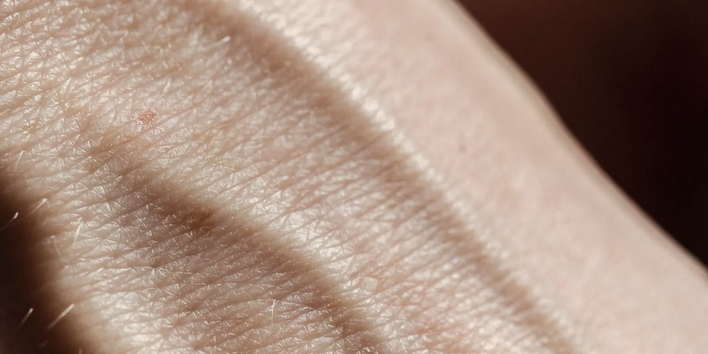

Celulitis o lipedema: cómo diferenciarlos a simple vista
Te miras las piernas en el espejo, pellizcas la piel y no sabes si lo que ves es la celulitis que tiene casi cualquier mujer o algo más. Hay señales reales que ayudan a distinguirlo, aunque la respuesta final casi nunca sale de una sola mirada.

"Celulitis o lipedema" es de las comparaciones que más se buscan en internet, y la duda es la misma si vives en Medellín, en el resto de Colombia o en cualquier otra ciudad: a simple vista, la piel con hoyuelos puede parecer igual en los dos casos. La diferencia real no está tanto en cómo se ve la superficie.
Está en cómo se comporta el tejido de fondo.
Qué es cada cosa, en corto
La celulitis es un cambio estético normal, no una enfermedad. Aparece cuando el tejido graso bajo la piel empuja hacia arriba entre bandas de tejido conectivo, y eso crea esa textura irregular en caderas, muslos o glúteos. La tienen la mayoría de las mujeres adultas en algún grado, con o sin sobrepeso, y no implica ningún problema de salud.
El lipedema es distinto: es una condición crónica del tejido graso que hace que se acumule de forma desproporcionada, casi siempre en piernas y a veces en brazos, respetando manos y pies. No es un tema de estética ni de fuerza de voluntad; es un tejido que se comporta distinto al del resto del cuerpo.
Celulitis o lipedema: señales que ayudan a diferenciarlos
Ninguna de estas señales por sí sola confirma nada, pero juntas orientan bastante:
- Dolor al pellizcar: la celulitis casi nunca duele. En el lipedema es frecuente sentir dolor o sensibilidad con una presión suave.
- Moretones fáciles: salir con moretones por golpes mínimos es más propio del lipedema que de la celulitis sola.
- Simetría y zonas: la celulitis suele ser más irregular y puede concentrarse en glúteos o abdomen. El lipedema tiende a ser simétrico entre ambas piernas (o ambos brazos) y respeta pies y manos.
- Respuesta a dieta y ejercicio: la celulitis puede mejorar algo con cambios de peso y tono muscular. El tejido del lipedema no suele reducirse en la misma proporción, aunque moverse sí ayuda con la pesadez.
- Cómo avanza con el tiempo: la celulitis se mantiene bastante estable. El lipedema tiende a progresar por etapas con el tiempo, aunque un manejo adecuado puede ayudar a llevarlo mejor, algo que puedes repasar en piel de naranja en el lipedema: qué significa.
Por qué una foto no basta (y qué miramos en una valoración en Medellín)
Hay algo que complica la autoevaluación: muchas pacientes tienen celulitis y lipedema a la vez, en las mismas zonas. Una foto de caderas o muslos puede mostrar las dos cosas superpuestas, y ahí una mirada rápida no alcanza.
En Seravena no nos quedamos con la primera impresión visual: en la valoración en Medellín revisamos si hay dolor a la palpación, si el patrón es simétrico, si los pies quedan respetados y, cuando hace falta, apoyamos la revisión con eco doppler para descartar un componente vascular asociado. Confundir celulitis con lipedema (o al revés) puede llevar a años probando cremas o dietas dirigidas a algo que no es el problema de fondo.
Si quieres repasar el cuadro completo antes de una cita, te sirve la guía completa del lipedema o, si la duda es más con la retención de líquidos que con la celulitis, lipedema o retención de líquidos: cómo distinguirlos.
Qué puedes hacer antes de tu próxima cita
Nada de esto remplaza una valoración, pero ayuda a que sea más útil. Antes de tu cita, anota:
- Si duele o es solo sensible al pellizcar.
- Si te salen moretones con golpes que antes no te marcaban.
- Si la textura es igual en las dos piernas o solo en una.
- Si los pies y las manos se ven distintos al resto de la zona, o se ven igual.
Con esa información, la valoración de lipedema avanza más rápido que empezando de cero.
Preguntas frecuentes
¿Se puede tener celulitis y lipedema al mismo tiempo?
Sí. La celulitis es muy común en mujeres con y sin lipedema, así que tener una no descarta ni confirma la otra. Muchas pacientes con lipedema también tienen celulitis en las mismas zonas, y eso puede complicar la autoevaluación por fotos.
¿La dieta y el ejercicio quitan la celulitis del lipedema?
Pueden mejorar la celulitis en algunos casos, porque responde a cambios de peso y tono muscular. El tejido graso propio del lipedema, en cambio, no suele reducirse de forma proporcional con dieta y ejercicio, aunque estos hábitos sí ayudan con la pesadez y la inflamación.
¿Cuál es la diferencia al tocar la piel?
La celulitis suele ser indolora al pellizcar. En el lipedema es frecuente sentir dolor o sensibilidad con una presión suave, y que salgan moretones con golpes mínimos, algo que no es típico de la celulitis sola.
¿Qué hacer si no estoy segura de cuál es mi caso?
No hay una prueba casera que lo confirme del todo. Lo más seguro es anotar lo que notas (dolor, moretones, simetría, si los pies cambian o no) y llevarlo a una valoración vascular, en vez de decidirlo solo por una foto o una búsqueda en internet.